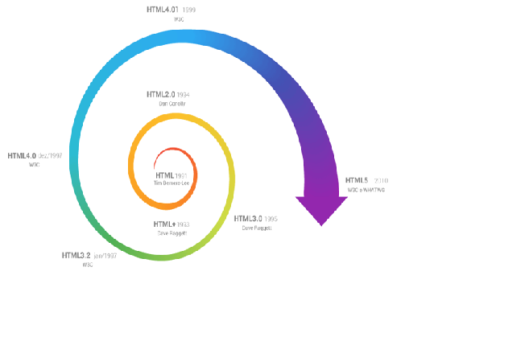

Conheça a Etec MCM
Introdução ao HTML
HTML (Hyper Text Markup Language) é uma linguagem de marcação de hipertexto, utilizada para a criação de de páginas da Web. Essa é a linguagem que o seu navegador (Browser) decodifica para exibir as páginas. (FERREIRA & EIS, ONLINE, p.7)
O HTML é baseado no conceito de Hipertexto. Hipertexto são conjuntos de elementos – ou nós – ligados por conexões. Estes elementos podem ser palavras, imagens, vídeos, áudio, documentos etc.

Breve Histórico da evolução do HTML
Desde a invenção da web em 1992 por Tim Berners-Lee, a HTML evoluiu a cada versão lançada, sendo a versão mais atual a HTML5. (SILVA, 2011, p.21)
Curiosidades HTML
- Uma curiosidade a respeito da evolução do HTML é que em um workshop da W3C em 2004 as empresas Mozila e Opera apresentaram uma proposta para evolução do HTML4 para o HTML5, mas a W3C se recusou a dar continuidade a essa ideia.
- Mas pouco tempo depois, as empresas Fundação Mozila, Apple e Opera anunciaram a criação de uma organização que visava a evolução do HTML, tal organização foi denominada WHATWG, a qual passou a desenvolver a linguagem XHTML.
O que é e para que serve o CSS
CSS (Cascading Style Sheets — Folhas de Estilos em Cascata) é uma extensão da HTML, uma linguagem de estilo, ou seja, fazendo o uso dessa linguagem é possível definir como o conteúdo dos elementos HTML serão apresentados na página da Web. Essa extensão foi incorporada à linguagem HTML a partir de sua quarta versão em 1997. Ou seja, se você tivesse 10 tipos diferentes de fontes em uma mesma página, então teria de fazer esta formatação 10 vezes. Até que fazer isto em uma só página, tudo bem, mas se o site tivesse 100 páginas então seria muito trabalhoso manter e alterar estas fontes, não acha?
Benefícios do uso do CSS
- • Controle do layout de diversos documentos utilizando apenas uma folha de estilos;
- • Maior precisão no controle do layout e design;
- • Aplicação de diferentes layouts para adaptação do conteúdo e design em diferentes formas de apresentação (impressoras, telas de diferentes tamanhos, etc.) (W3CSCHOOL, ONLINE).

O que é o W3C?
O W3C (World Wide Web Consortium), criado em outubro de 1994 por Tim Berners-Lee, é um consórcio internacional formado por empresas, instituições, pesquisadores, desenvolvedores e público em geral. A finalidade desse consórcio é desenvolver a web a seu potencial máximo, criando normas, especificações e padronizações que se aplicam aos mais diversos segmentos e setores da web. (W3C, ONLINE)
Consórcio World Wide Web
- • Desenvolve recomendações abertas (Padrões Web);
- • Até agora, mais de 80 padrões;
- • Engajado em educação, expansão e desenvolvimento de orientações;
- • Um fórum neutro para construir consenso em torno de padrões Web;
- • Padrões Web devem ser abertos, isto é, não proprietários;
- • A Web deve ser acessível para todos.

Se quiser saber mais sobre HTML, CSS ou JavaScript, acesse:
Cintia Pinho
W3Schools
Clique aqui para conhecer mais sobre JavaScript
Clique aqui para ver alguns posicionamentos